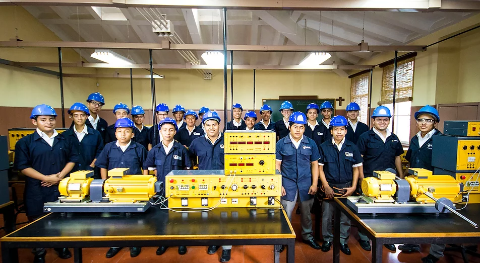

| Mecánica automotriz | Electricidad industrial | Electronica industrial | Informatica |
|---|---|---|---|

|
 |

|

|
|
Autoestudio Universidad Honda Japón, mecanismos servo asistidos, mecánica de motores diésel y gasolina , sistemas de ignición e inyección. Diagnóstico computarizado. |
Cableado estructurado, instalaciones eléctricas domiciliares, comerciales e industriales, soldadura exotérmica, transferencias eléctricas, motores eléctricos, automatización industrial, domótica, energías renovables |
Electrónica analógica, digital y de potencia, micro controladores, máquinas eléctricas, controladores lógicos programables, redes industriales, electroneumática, robótica |
Desarrollo de aplicaciones web y móviles con Java, Microsoft, Visual Studio, Oracle y diseño de redes informáticas con Cisco System. |